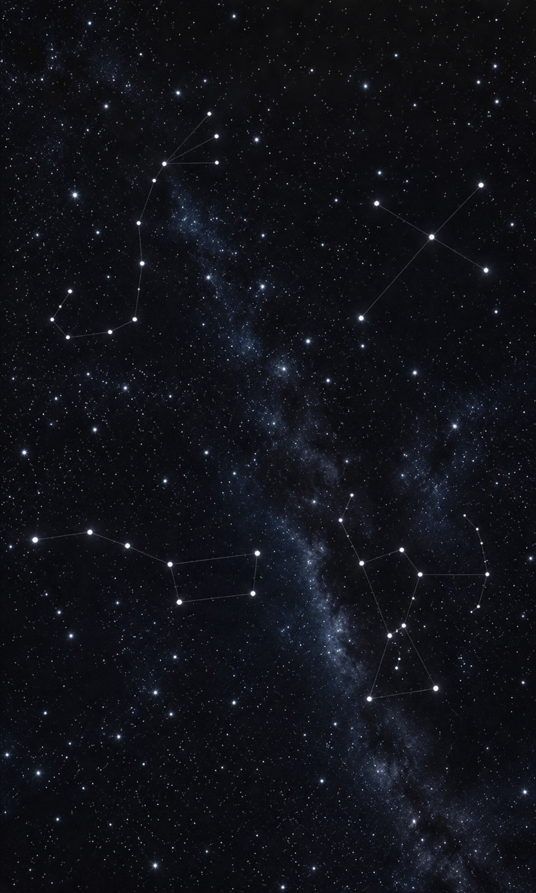

STESEN 1
🔭 Balai Cerap • Misi Buruj
Sentuh buruj yang bercahaya di langit malam. Perhatikan corak bintangnya, baca penerangan dan kenal pasti buruj tersebut.

☝️ Sentuh buruj
Buruj dipilih: Belum dipilih
⭐ Selepas pemerhatian, kenal pasti buruj
📝 Selepas mengenal pasti buruj, teruskan ke Catatan untuk merekod pemerhatian kamu.